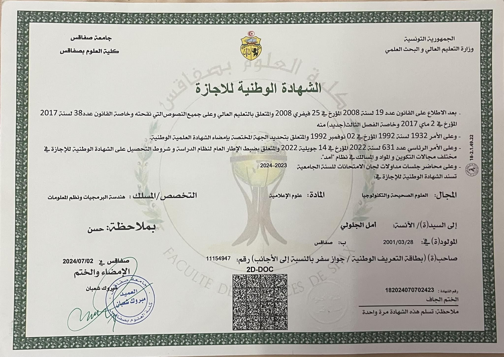
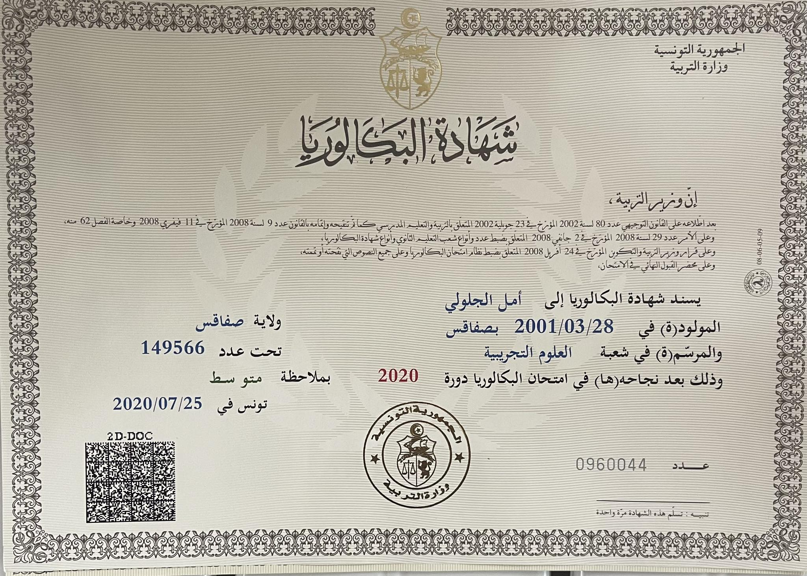

Academic background
Computer Science Engineering
International Institute of Technology
Diploma : Génie Logiciel et Informatique Décisionnelle
I'm currently a 1st year computer engineering student , willing to persuade Software Engineering as a branch
September. 2024 - Still
Tunisia, Sfax
Computer Science Licence Degree
Faculty Of Sciences Of Sfax
Diploma : Computer Science Licence Degree
Sept. 2023 - June 2024
Tunisia, Sfax
Integrated Preparotary Cycle Degree in Computer Science
Faculty Of Sciences Of Sfax
Sept. 2020 - June 2023
Tunisia, Sfax
Bachelor Degree
I have passed the National Tunisian Bachelor's exams and i obtained my diploma
Field : Experimental Sciences
Sept. 2019 - July. 2020
Tunisia, Sfax
